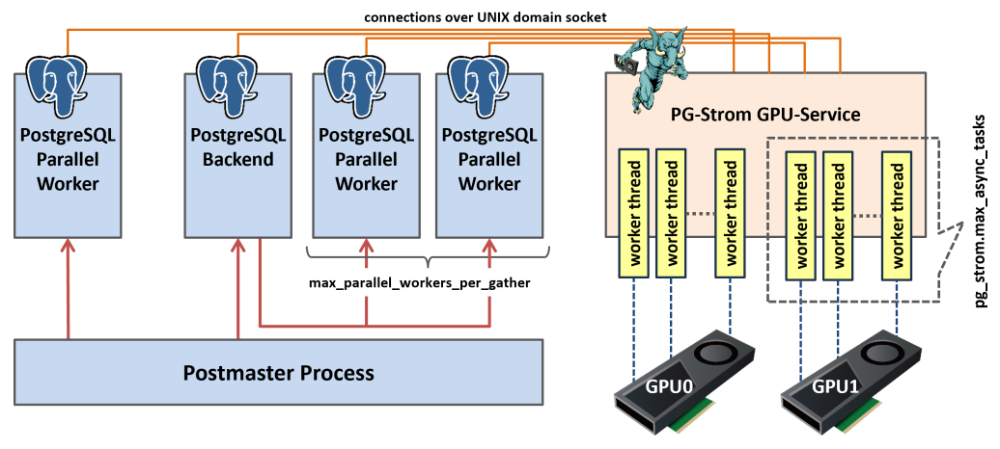

Basic operations
Confirmation of GPU off-loading
You can use EXPLAIN command to check whether query is executed on GPU device or not.
A query is internally split into multiple elements and executed, and PG-Strom is capable to run SCAN, JOIN and GROUP BY in parallel on GPU device. If you can find out GpuScan, GpuJoin or GpuPreAgg was displayed instead of the standard operations by PostgreSQL, it means the query is partially executed on GPU device.
Below is an example of EXPLAIN command output.
=# explain
select sum(lo_revenue), d_year, p_brand1
from lineorder, date1, part, supplier
where lo_orderdate = d_datekey
and lo_partkey = p_partkey
and lo_suppkey = s_suppkey
and p_brand1 between 'MFGR#2221' and 'MFGR#2228'
and s_region = 'ASIA'
group by d_year, p_brand1;
QUERY PLAN
-------------------------------------------------------------------------------------------------
HashAggregate (cost=2924539.01..2924612.42 rows=5873 width=46)
Group Key: date1.d_year, part.p_brand1
-> Custom Scan (GpuPreAgg) on lineorder (cost=2924421.55..2924494.96 rows=5873 width=46)
GPU Projection: pgstrom.psum(lo_revenue), d_year, p_brand1
GPU Join Quals [1]: (lo_partkey = p_partkey) [plan: 600046000 -> 783060 ]
GPU Outer Hash [1]: lo_partkey
GPU Inner Hash [1]: p_partkey
GPU Join Quals [2]: (lo_suppkey = s_suppkey) [plan: 783060 -> 157695 ]
GPU Outer Hash [2]: lo_suppkey
GPU Inner Hash [2]: s_suppkey
GPU Join Quals [3]: (lo_orderdate = d_datekey) [plan: 157695 -> 157695 ]
GPU Outer Hash [3]: lo_orderdate
GPU Inner Hash [3]: d_datekey
GPU Group Key: d_year, p_brand1
Scan-Engine: GPU-Direct with 2 GPUs <0,1>
-> Seq Scan on part (cost=0.00..41481.00 rows=1827 width=14)
Filter: ((p_brand1 >= 'MFGR#2221'::bpchar) AND (p_brand1 <= 'MFGR#2228'::bpchar))
-> Custom Scan (GpuScan) on supplier (cost=100.00..19001.67 rows=203767 width=6)
GPU Projection: s_suppkey
GPU Scan Quals: (s_region = 'ASIA'::bpchar) [plan: 1000000 -> 203767]
Scan-Engine: GPU-Direct with 2 GPUs <0,1>
-> Seq Scan on date1 (cost=0.00..72.56 rows=2556 width=8)
(22 rows)
You can notice some unusual query execution plans.
GpuJoin and GpuPreAgg are implemented on the CustomScan mechanism. In this example, GpuJoin runs JOIN operation on lineorder, date1, part and supplier, then GpuPreAgg which receives the result of GpuJoin runs GROUP BY operation by the d_year and p_brand1 column on GPU device.
PG-Strom interacts with the query optimizer during PostgreSQL is building a query execution plan, and it offers alternative query execution plan with estimated cost for PostgreSQL's optimizer, if any of SCAN, JOIN, or GROUP BY are executable on GPU device. This estimated cost is better than other query execution plans that run on CPU, it chooses the alternative execution plan that shall run on GPU device.
For GPU execution, it requires operators, functions and data types in use must be supported by PG-Strom.
It supports numeric types like int or float, date and time types like date or timestamp, variable length string like text and so on. It also supports arithmetic operations, comparison operators and many built-in operators.
See References for the detailed list.
Enables/Disables PG-Strom
PG-Strom analyzes SQL given by the user, and if it can be executed on the GPU, it generates opcodes corresponding to WHERE clauses and JOIN search conditions and executes them transparently on the GPU.
These processes are done automatically, but you can explicitly disable PG-Strom with the following command and make it work the same as original PostgreSQL.
=# set pg_strom.enabled = off;
SET
In addition, you can enable/disable individual functions using the following parameters.
pg_strom.enable_gpuscanpg_strom.enable_gpujoinpg_strom.enable_gpuhashjoinpg_strom.enable_gpugistindexpg_strom.enable_gpupreaggpg_strom.enable_gpusortpg_strom.enable_brinpg_strom.enable_partitionwise_gpujoinpg_strom.enable_partitionwise_gpupreagg
CPU+GPU Hybrid Parallel
PG-Strom also supports PostgreSQL's CPU parallel execution.
PostgreSQL's CPU parallel execution is implemented by a Gather node starting several background worker processes, and later combining the results of queries that each background worker "partially" executed. PG-Strom processes such as GpuJoin and GpuPreAgg can be executed on the background worker side, and each process uses the GPU to perform processing. Normally, the processing speed of each CPU core to set up a buffer to supply data to the GPU is much slower than the processing speed of SQL workloads on the GPU, so a hybrid of CPU parallelism and GPU parallelism can be expected to improve processing speed.
In the CPU parallel execution mode, Gather node launches several background worker processes, then it gathers the result of "partial" execution by individual background workers. CustomScan execution plan provided by PG-Strom, like GpuJoin or GpuPreAgg, support execution at the background workers. They process their partial task using GPU individually. A CPU core usually needs much more time to set up buffer to supply data for GPU than execution of SQL workloads on GPU, so hybrid usage of CPU and GPU parallel can expect higher performance. On the other hands, each PostgreSQL process needs to connect the PG-Strom GPU service, running in the background, and initialize the per-session stete, so a high degree of CPU parallelism is not always better.
Look at the execution plan below.
The execution plan below Gather can be executed by background workers. The lineorder table, which holds 600 million rows, is scanned by two background worker processes and the coordinator process, so approximately 200 million rows per process are processed by GpuPreAgg, and the results are joined by Gather and HashAggregate nodes.
=# explain
select sum(lo_revenue), d_year, p_brand1
from lineorder, date1, part, supplier
where lo_orderdate = d_datekey
and lo_partkey = p_partkey
and lo_suppkey = s_suppkey
and p_brand1 between
'MFGR#2221' and 'MFGR#2228'
and s_region = 'ASIA'
group by d_year, p_brand1;
QUERY PLAN
-------------------------------------------------------------------------------------------------------------
HashAggregate (cost=1265644.05..1265717.46 rows=5873 width=46)
Group Key: date1.d_year, part.p_brand1
-> Gather (cost=1264982.11..1265600.00 rows=5873 width=46)
Workers Planned: 2
-> Parallel Custom Scan (GpuPreAgg) on lineorder (cost=1263982.11..1264012.70 rows=5873 width=46)
GPU Projection: pgstrom.psum(lo_revenue), d_year, p_brand1
GPU Join Quals [1]: (lo_partkey = p_partkey) [plan: 250019100 -> 326275 ]
GPU Outer Hash [1]: lo_partkey
GPU Inner Hash [1]: p_partkey
GPU Join Quals [2]: (lo_suppkey = s_suppkey) [plan: 326275 -> 65706 ]
GPU Outer Hash [2]: lo_suppkey
GPU Inner Hash [2]: s_suppkey
GPU Join Quals [3]: (lo_orderdate = d_datekey) [plan: 65706 -> 65706 ]
GPU Outer Hash [3]: lo_orderdate
GPU Inner Hash [3]: d_datekey
GPU Group Key: d_year, p_brand1
Scan-Engine: GPU-Direct with 2 GPUs <0,1>
-> Parallel Seq Scan on part (cost=0.00..29231.00 rows=761 width=14)
Filter: ((p_brand1 >= 'MFGR#2221'::bpchar) AND (p_brand1 <= 'MFGR#2228'::bpchar))
-> Parallel Custom Scan (GpuScan) on supplier (cost=100.00..8002.40 rows=84903 width=6)
GPU Projection: s_suppkey
GPU Scan Quals: (s_region = 'ASIA'::bpchar) [plan: 1000000 -> 84903]
Scan-Engine: GPU-Direct with 2 GPUs <0,1>
-> Parallel Seq Scan on date1 (cost=0.00..62.04 rows=1504 width=8)
(24 rows)
Configuration of parallelism
Parallelism in PostgreSQL is the number of processes when multiple worker processes are used in parallel to execute a query. This is the number of processes that the Gather node starts in the execution plan, and can be controlled mainly by the max_parallel_workers_per_gather parameter.
The existence of parallel worker processes is also important in PG-Strom. Even though most data reading from storage is done by the GPU-Direct SQL mechanism and the CPU load is not large, it is the CPU's job to check the visibility of blocks to be read and to copy the contents of dirty buffers.
In addition, there is another point in PG-Strom that should be considered when considering the parallelism of processing. That is the number of worker threads in the GPU-Service.

The diagram above shows a schematic of the PG-Strom architecture.
When a client connects to PostgreSQL, the postmaster process, which manages all processes, starts a PostgreSQL Backend process for each connection. This process receives SQL from the client and executes the query based on the execution plan, possibly with the help of a Parallel Worker process.
When using PG-Strom to execute queries, these processes open a connection to the resident PG-Strom GPU Service process via a UNIX domain socket. Then, they send requests one after another, pairing the instruction code to be executed with the storage information to be read (approximately 64MB chunks).
PG-Strom GPU Service is multi-threaded, and each worker thread executes these requests one after another when it receives them. A typical request is processed as follows: read from storage, start GPU Kernel, collect the processing result, and send a response request.
Since these processes can be easily multiplexed, it is necessary to launch a sufficient number of threads to avoid idling resources, for example, while thread A is waiting to read from storage, thread B can execute GPU Kernel.
To change the number of worker threads, use the pg_strom.max_async_tasks parameter.
For each GPU, the number of threads specified by this parameter will be launched and wait for requests from the PostgreSQL backend/worker process.
=# SET pg_strom.max_async_tasks = 24;
SET
The parameter setting takes effect immediately. For example, if you increase it from the default 16 to 24, 8 additional worker threads will be launched for each GPU. After a few seconds, you will see the following log output:
LOG: GPU0 workers - 8 startup, 0 terminate
LOG: GPU1 workers - 8 startup, 0 terminate
Consolidation of sub-plans
PG-Strom can execute SCAN, JOIN, GROUP BY and SORT processes on the GPU. However, if you simply replace the corresponding standard PostgreSQL processes with GPU processes, you will run into problems. After SCAN, the data is written back to the host buffer, then copied back to the GPU for JOIN, and then written back to the host buffer again before GROUP BY is executed, resulting in data ping-ponging between the CPU and GPU.
Compared to exchanging data (rows) in CPU memory, the CPU and GPU are connected by a PCI-E bus, so data transfer inevitably incurs a large cost. To avoid this, if a series of GPU-compatible tasks such as SCAN, JOIN, GROUP BY and SORT can be performed consecutively, data should be exchanged as much as possible in GPU memory, and writing data back to the CPU should be minimised.

The following execution plan is for a mixed workload of SCAN, JOIN, and GROUP BY executed on PostgreSQL.
You can see that the lineorder table, which is the largest, is used as the axis to join the part, supplier, and date1 tables using HashJoin, and finally an Aggregate is used to perform the aggregation process.
=# explain
select sum(lo_revenue), d_year, p_brand1
from lineorder, date1, part, supplier
where lo_orderdate = d_datekey
and lo_partkey = p_partkey
and lo_suppkey = s_suppkey
and p_brand1 between
'MFGR#2221' and 'MFGR#2228'
and s_region = 'ASIA'
group by d_year, p_brand1;
QUERY PLAN
-------------------------------------------------------------------------------------------------------------------------------
Finalize HashAggregate (cost=14892768.98..14892842.39 rows=5873 width=46)
Group Key: date1.d_year, part.p_brand1
-> Gather (cost=14891403.50..14892651.52 rows=11746 width=46)
Workers Planned: 2
-> Partial HashAggregate (cost=14890403.50..14890476.92 rows=5873 width=46)
Group Key: date1.d_year, part.p_brand1
-> Hash Join (cost=52477.64..14889910.71 rows=65706 width=20)
Hash Cond: (lineorder.lo_orderdate = date1.d_datekey)
-> Parallel Hash Join (cost=52373.13..14888902.74 rows=65706 width=20)
Hash Cond: (lineorder.lo_suppkey = supplier.s_suppkey)
-> Parallel Hash Join (cost=29240.51..14864272.81 rows=326275 width=26)
Hash Cond: (lineorder.lo_partkey = part.p_partkey)
-> Parallel Seq Scan on lineorder (cost=0.00..13896101.47 rows=250019147 width=20)
-> Parallel Hash (cost=29231.00..29231.00 rows=761 width=14)
-> Parallel Seq Scan on part (cost=0.00..29231.00 rows=761 width=14)
Filter: ((p_brand1 >= 'MFGR#2221'::bpchar) AND (p_brand1 <= 'MFGR#2228'::bpchar))
-> Parallel Hash (cost=22071.33..22071.33 rows=84903 width=6)
-> Parallel Seq Scan on supplier (cost=0.00..22071.33 rows=84903 width=6)
Filter: (s_region = 'ASIA'::bpchar)
-> Hash (cost=72.56..72.56 rows=2556 width=8)
-> Seq Scan on date1 (cost=0.00..72.56 rows=2556 width=8)
(21 rows)
Conversely, when utilizing PG-Strom, the scenario is notably distinct. With the exception of the Result node, which is responsible for displaying the results, all processing is executed by Custom Scan (GpuPreAgg). (Note: In this execution plan, CPU parallelism and CPU-Fallback are disabled to keep the results as simple as possible.)
However, despite being designated as GPU-PreAgg, this processing does not exclusively perform GROUP BY.
According to the EXPLAIN output, this GPU-PreAgg scans the lineorder table, which is the largest, while reading the part, supplier, and date1 tables at the lower nodes and performing JOIN processing with these. It then groups by d_year and p_brand1, sorts by the same keys, and returns the processing results to the CPU.
In PostgreSQL, complex queries are often broken down into many elements, and an execution plan containing many processing steps is generated. On the other hand, in PG-Strom, these elements are also executed without any omissions, but it is generally more efficient to integrate them into a single plan as much as possible.
=# explain
select sum(lo_revenue), d_year, p_brand1
from lineorder, date1, part, supplier
where lo_orderdate = d_datekey
and lo_partkey = p_partkey
and lo_suppkey = s_suppkey
and p_brand1 between 'MFGR#2221' and 'MFGR#2228'
and s_region = 'ASIA'
group by d_year, p_brand1
order by d_year, p_brand1;
QUERY PLAN
-------------------------------------------------------------------------------------------------
Result (cost=3111326.30..3111451.10 rows=5873 width=46)
-> Custom Scan (GpuPreAgg) on lineorder (cost=3111326.30..3111363.01 rows=5873 width=46)
GPU Projection: pgstrom.psum(lo_revenue), d_year, p_brand1
GPU Join Quals [1]: (lo_partkey = p_partkey) [plan: 600046000 -> 783060 ]
GPU Outer Hash [1]: lo_partkey
GPU Inner Hash [1]: p_partkey
GPU Join Quals [2]: (lo_suppkey = s_suppkey) [plan: 783060 -> 157695 ]
GPU Outer Hash [2]: lo_suppkey
GPU Inner Hash [2]: s_suppkey
GPU Join Quals [3]: (lo_orderdate = d_datekey) [plan: 157695 -> 157695 ]
GPU Outer Hash [3]: lo_orderdate
GPU Inner Hash [3]: d_datekey
GPU Group Key: d_year, p_brand1
Scan-Engine: GPU-Direct with 2 GPUs <0,1>
GPU-Sort keys: d_year, p_brand1
-> Seq Scan on part (cost=0.00..41481.00 rows=1827 width=14)
Filter: ((p_brand1 >= 'MFGR#2221'::bpchar) AND (p_brand1 <= 'MFGR#2228'::bpchar))
-> Custom Scan (GpuScan) on supplier (cost=100.00..19156.92 rows=203767 width=6)
GPU Projection: s_suppkey
GPU Scan Quals: (s_region = 'ASIA'::bpchar) [plan: 1000000 -> 203767]
Scan-Engine: GPU-Direct with 2 GPUs <0,1>
-> Seq Scan on date1 (cost=0.00..72.56 rows=2556 width=8)
(22 rows)
Special Logging
For example, when PG-Strom does not behave as expected, log output is important to find out why it is not working as expected. In this section, we will explain how to output information specific to PG-Strom.
When PG-Strom checks a given query and evaluates whether it can be executed on the GPU and what additional features are available, please increase the log output level to DEBUG2.
If the condition expression contains an operator that is determined to be unable to be executed on the GPU and the data type is included, PG-Strom will output this information in the log.
See the example below. Currently, PG-Strom does not support GPU execution of to_hex() function, so it has given up on generating CustomScan(GpuScan) because the WHERE clause contains this function.
=# SET client_min_messages = DEBUG2;
SET
=# explain select count(*), lo_shipmode from lineorder where to_hex(lo_orderdate) like '%34' group by lo_shipmode;
DEBUG: (__codegen_func_expression:1858) function to_hex(integer) is not supported on the target device
DETAIL: problematic expression: {OPEXPR :opno 1209 :opfuncid 850 :opresulttype 16 :opretset false :opcollid 0 :inputcollid 100 :args ({FUNCEXPR :funcid 2089 :funcresulttype 25 :funcretset false :funcvariadic false :funcformat 0 :funccollid 100 :inputcollid 0 :args ({VAR :varno 1 :varattno 6 :vartype 23 :vartypmod -1 :varcollid 0 :varnullingrels (b) :varlevelsup 0 :varnosyn 1 :varattnosyn 6 :location 65}) :location 58} {CONST :consttype 25 :consttypmod -1 :constcollid 100 :constlen -1 :constbyval false :constisnull false :location 84 :constvalue 7 [ 28 0 0 0 37 51 52 ]}) :location 79}
DEBUG: (__codegen_func_expression:1858) function to_hex(integer) is not supported on the target device
DETAIL: problematic expression: {OPEXPR :opno 1209 :opfuncid 850 :opresulttype 16 :opretset false :opcollid 0 :inputcollid 100 :args ({FUNCEXPR :funcid 2089 :funcresulttype 25 :funcretset false :funcvariadic false :funcformat 0 :funccollid 100 :inputcollid 0 :args ({VAR :varno 1 :varattno 6 :vartype 23 :vartypmod -1 :varcollid 0 :varnullingrels (b) :varlevelsup 0 :varnosyn 1 :varattnosyn 6 :location 65}) :location 58} {CONST :consttype 25 :consttypmod -1 :constcollid 100 :constlen -1 :constbyval false :constisnull false :location 84 :constvalue 7 [ 28 0 0 0 37 51 52 ]}) :location 79}
QUERY PLAN
---------------------------------------------------------------------------------------------------------
Finalize GroupAggregate (cost=15197201.22..15197203.00 rows=7 width=19)
Group Key: lo_shipmode
-> Gather Merge (cost=15197201.22..15197202.86 rows=14 width=19)
Workers Planned: 2
-> Sort (cost=15196201.20..15196201.22 rows=7 width=19)
Sort Key: lo_shipmode
-> Partial HashAggregate (cost=15196201.03..15196201.10 rows=7 width=19)
Group Key: lo_shipmode
-> Parallel Seq Scan on lineorder (cost=0.00..15146197.20 rows=10000766 width=11)
Filter: (to_hex(lo_orderdate) ~~ '%34'::text)
(10 rows)
The output is intended for developers, so it's not necessarily easy to understand, but it shows that the to_hex(integer) function is not supported.
Using this as a reference, you can rewrite the condition clause to achieve the same effect (of course, there may be cases where rewriting is not possible).
postgres=# explain select count(*), lo_shipmode from lineorder where lo_orderdate % 256 = 34 group by lo_shipmode;
DEBUG: gpusort: disabled by pg_strom.cpu_fallback
DEBUG: gpusort: disabled by pg_strom.cpu_fallback
DEBUG: gpucache: table 'lineorder' is not configured - check row/statement triggers with pgstrom.gpucache_sync_trigger()
QUERY PLAN
----------------------------------------------------------------------------------------------------------
HashAggregate (cost=1221119.96..1221120.03 rows=7 width=19)
Group Key: lo_shipmode
-> Gather (cost=1221119.19..1221119.93 rows=7 width=19)
Workers Planned: 2
-> Parallel Custom Scan (GpuPreAgg) on lineorder (cost=1220119.19..1220119.23 rows=7 width=19)
GPU Projection: pgstrom.nrows(), lo_shipmode
GPU Scan Quals: ((lo_orderdate % 256) = 34) [plan: 600046000 -> 1250096]
GPU Group Key: lo_shipmode
Scan-Engine: GPU-Direct with 2 GPUs <0,1>
(9 rows)
In this way, an execution plan for GPU-PreAgg with a filter based on the WHERE clause was generated.
It also shows that although the use of GPU-Sort and GPU-Cache was considered, they were not available (pg_strom.cpu_fallback is enabled) and were not configured (lineorder has no GPU-Cache setting).
Consequently, an execution plan for GPU-PreAgg with a filter based on the WHERE clause was generated.
It also shows that although the use of GPU-Sort and GPU-Cache was considered, they were not available (pg_strom.cpu_fallback is enabled) and were not configured (lineorder has no GPU-Cache setting).
When PG-Strom uses GPU-Direct SQL, it uses the heterodb-extra extension module.
To control the output of logs from the heterodb-extra extension module, use the pg_strom.extra_ereport_level parameter.
The setting value ranges from 0 to 2, and is roughly classified as follows:
- 0 ... Only output clear errors
- 1 ... Output logs related to internal conditional branching
- 2 ... Output detailed messages for debugging
See the example below.
=# import foreign schema f_customer from server arrow_fdw into public options (file '/tmp/f_customer.arrow');
IMPORT FOREIGN SCHEMA
=# set pg_strom.extra_ereport_level = 1;
SET
=# explain select count(*), c_name from f_customer group by c_name;
QUERY PLAN
---------------------------------------------------------------------------------------------------------
HashAggregate (cost=38597.46..38599.46 rows=200 width=40)
Group Key: c_name
-> Gather (cost=38575.42..38596.46 rows=200 width=40)
Workers Planned: 2
-> Parallel Custom Scan (GpuPreAgg) on f_customer (cost=37575.42..37576.46 rows=200 width=40)
GPU Projection: pgstrom.nrows(), c_name
GPU Group Key: c_name
referenced: c_name
file0: /tmp/f_customer.arrow (read: 629.43MB, size: 3404.59MB)
Scan-Engine: VFS with 2 GPUs <0,1>
(10 rows)
As you can see, aggregation queries that reference /tmp/f_customer.arrow cannot use GPU-Direct SQL.
If you check the logs to see why, you will see the following message:
LOG: heterodb-extra: [info] path='/tmp/f_customer.arrow' on 'sdb3 (8,19)' optimal_gpus=00000000 numa_gpus=00000000 system_gpus=00000003 license-validation='-' policy='optimal' (pcie.c:1738)
LOG: [info] foreign-table='f_customer' arrow-file='/tmp/f_customer.arrow' has no schedulable GPUs (arrow_fdw.c:2829)
It turns out that /dev/sdb3 where /tmp/f_customer.arrow is located is not an NVME-SSD, and therefore there is no GPU that can be scheduled, so GPU-Direct SQL cannot be invoked.
So, copy /tmp/f_customer.arrow to a partition on the NVME-SSD and run it again.
=# import foreign schema f_customer from server arrow_fdw into public options (file '/opt/arrow/f_customer.arrow');
IMPORT FOREIGN SCHEMA
=# explain select count(*), c_name from f_customer group by c_name;
QUERY PLAN
---------------------------------------------------------------------------------------------------------
HashAggregate (cost=38597.46..38599.46 rows=200 width=40)
Group Key: c_name
-> Gather (cost=38575.42..38596.46 rows=200 width=40)
Workers Planned: 2
-> Parallel Custom Scan (GpuPreAgg) on f_customer (cost=37575.42..37576.46 rows=200 width=40)
GPU Projection: pgstrom.nrows(), c_name
GPU Group Key: c_name
referenced: c_name
file0: /opt/arrow/f_customer.arrow (read: 629.43MB, size: 3404.59MB)
Scan-Engine: GPU-Direct with 2 GPUs <0,1>
(10 rows)
In this way, we were able to successfully enable GPU-Direct SQL and run GpuPreAgg.
the log outputs optimal_gpus=00000003 numa_gpus=00000003 when referring to /opt/arrow/mytest.arrow as follows, i.e. it is possible to schedule to GPU0 and GPU1.
LOG: heterodb-extra: [info] path='/opt/arrow/mytest.arrow' on 'md127p1 (259,9)' optimal_gpus=00000003 numa_gpus=00000003 system_gpus=00000003 license-validation='Y' policy='optimal' (pcie.c:1738)
Knowledge base
We publish several articles, just called "notes", on the project wiki-site of PG-Strom.